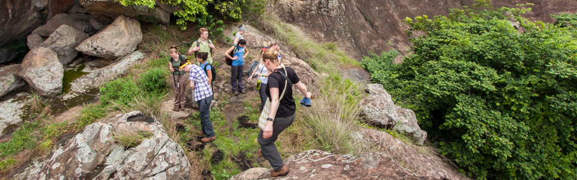

Understanding and predicting the effects climate change, habitat loss, and other human disturbances on natural populations is one of the grand challenges for today’s natural scientists.
My research is in the broad area of behavioral responses to changing environments, both ecological and social. We still do not fully understand the limits of behavioral flexibility or whether adaptive responses will be sufficient to keep pace with rapidly changing environmental conditions. These gaps in our understanding motivate the goals of my research: to shed light on the limits, consequences, and evolutionary roots of flexible responses to environments that change in time or space.
Most of my research has been carried out with natural primate populations, mainly white-faced capuchins in the Área de Conservación Guanacaste in northwestern Costa Rica. My postdoctoral research focuses on savannah baboons in the Amboseli ecosystem of East Africa, and I also do comparative research with the Primate Life History Database.
PhD in Biological Anthropology, 2014
University of Calgary
MA in Biological Anthropology, 2008
University of Calgary
BSc in Biology, 2002
California Institute of Technology
My research investigates the behavioral and demographic consequences of environmental change in wild animal populations.
*
How do climate fluctuations affect survival and fertility?
Why do men die earlier but appear healthier? And why don’t baboons show this same pattern?
To what extent can primates overcome a bad start in life?
Behavioral thermoregulation and urine-washing.
An exceptional archive of primate life history data.
Understanding the drivers of animal space use.
Navigating a landscape of fear.
Are aspects of offspring fitness affected by maternal age?
How and why animals select their foods.
Conservation guidance for critically endangered primates.
Área de Conservación Guanacaste
My recent field research has focused on primates in the Área de Conservación Guanacaste (ACG), a Unesco World Heritage site in northwestern Costa Rica that supports extraodrinary biodiversity. The conservation area comprises several different sectors that extend from the Pacific Ocean over a chain of dormant volcanos to the Atlantic slope.
One particularly well-studied part of the ACG is the Santa Rosa sector. The white-faced capuchins in Santa Rosa are studied under the directorship of Linda Fedigan, Katharine Jack, and Amanda Melin.
The black-handed spider monkeys are studied by Filippo Aureli and Colleen Schaffner.
Analysis scripts and code snippets
I believe that my foremost responsibility as an educator is to provide students with skills that prepare them for rewarding careers. A broad-based education that merges natural and social sciences can serve this goal by encouraging critical thinking and promoting integrative approaches that embrace diverse points of view. My teaching philosophy is oriented around meeting this responsibility, and it has three pillars: meticulous preparation, fundamental respect, and a dedication to challenging students to become informed and engaged citizens.
